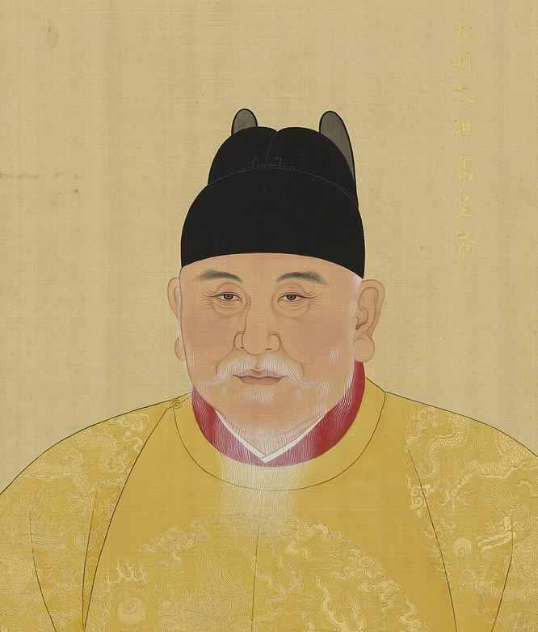

周藩列祖列宗与杰出人物志
大明周藩源自太祖高皇帝圣脉，始祖周定王朱橚开藩汴梁，历代先贤以仁孝、仁医、词曲、文治与节烈垂范后世。
👑 皇祖与开派始祖

大明太祖高皇帝御容（正容）
太祖高皇帝 · 朱元璋 大明开国之君
大明王朝开国皇帝。推翻蒙元统治，恢复中华礼乐。太祖分封诸皇子屏藩天下，亲赐周王支派二十字字辈派语（“有子同安睦，勤朝在肃恭……”），并钦定五行相生偏旁命家法，为周藩百代法统之源。
📜 功德：开创大明宏业，立《皇明祖训》，定二十字辈宗法，垂范千秋。
始祖周定王朱橚御容画像
周定王 · 朱橚 周藩开派始祖
太祖第五子，马皇后所生。初封吴王，后改封周王，洪武十四年就藩汴梁（开封）。定王好学博古，以仁慈济世著称，辟药圃、罗医士，亲自辨尝百草，救济饥馑。
🌿 千秋著述：主编人类首部食用植物科学巨典《救荒本草》及方剂大典《普济方》《袖珍方》。
📜 历代贤王与名家
周宪王 · 朱有炖（号诚斋） 曲圣 / 戏曲大师
明初最具代表性的戏曲大家与词曲巨擘。工诗善画，精通音律，创作《诚斋乐府》杂剧 31 部及《元宫词》百首，语言通俗生动，开创明代宫廷戏曲与中原市民文学辉映之鼎盛时代。
周简王 · 朱有爝 周藩大宗继袭之源
初封祥符王。宪王薨逝无嗣，宣德三年奉旨继袭周王爵位，是后世历代周王与绝大多数周藩宗支的共同直系先祖。
末代周王 · 朱恭枵 节烈忠义宗室
明末李自成三围汴京，周王朱恭枵散尽数百年王府库银犒赏将士守城，誓与开封共存亡。九月黄河决口水灌大内，王府没入泥沙，恭枵率宗室转徙避乱，忠义气节冠绝宗藩。